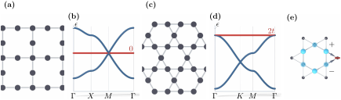
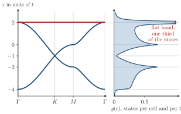
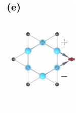

Advanced Quantum Materials 2027 · All lectures · Lecture notes
Session 2. Symmetries, Tight-Binding Band Structure Theory, and Effective Models
2.11b Flat bands from the geometry of the lattice, the Lieb and the kagome lattices
Can a band be flat when every hopping of the lattice is nonzero? We will now see that it can, in the Lieb and the kagome lattices, where a state on one plaquette cancels on every site outside it. This gives a flat band at \(\epsilon=0\) for the Lieb lattice and at \(\epsilon=2t\) for the kagome lattice, with the sign of (2.5).
\[g(\omega) = \int_{\text{BZ}} \frac{d^dk}{(2\pi)^d}\; \delta\!\left(\omega-E(\mathbf{k})\right). \tag{2.16}\]
This is the density of states of Section 2.9. It counts the states per unit of energy at the energy \(\omega\), for one band \(E(\mathbf k)\) and for one spin, per unit length, area or volume of the lattice in \(d\) dimensions.
Two standard lattices realize truly flat bands only from their geometry in real space, and not from a fine-tuning of hopping parameters to zero. The Lieb lattice is built from a square lattice where one site out of every four is removed in a regular pattern. Its dispersion has two dispersive bands, which come from the bands of the square lattice (2.14), and in addition one exactly flat band at zero energy. Near the corner \(M\) of the Brillouin zone the two dispersive bands form a linear, Dirac-like cone, and the flat band goes through the tip of this cone.
The kagome lattice is built instead from a triangular lattice where one site out of every four is removed. Its dispersion is closer to the one of the honeycomb lattice, with linear crossings similar to Dirac cones, and in addition it has a flat band at the edge of the spectrum. With the sign convention of (2.5) this flat band is at the top, at \(\epsilon=2t\), and it would be at the bottom for the opposite sign of \(t\). In both cases the flat band comes from destructive interference between hopping paths in real space. This is a purely geometric effect and not an effect of interactions, and the physics of strong correlations only enters once electrons are placed into these bands, which are already flat. Figure 2.6 shows both lattices, both dispersions, and the localized state where the hopping paths cancel.

The localized state of panel (e) is the whole reason for the flat band of the kagome lattice, and one line of algebra shows that it is an exact eigenstate.
On the kagome lattice with \(H=-t\sum_{\langle ij\rangle}c_i^\dagger c_j\) over first neighbors, the state \(\psi\) with the amplitudes \(+1,-1,+1,-1,+1,-1\) around one hexagon, and zero on every other site, obeys
\[H\psi = 2t\,\psi\]
for any value of \(t\). Such a state sits on every hexagon of the lattice, so the energy \(2t\) does not depend on the momentum, which is the flat band. It holds one third of all the states.
The steps Why the state on one hexagon has the energy 2t
We write \(H\psi\) site by site, \((H\psi)_i=-t\sum_j\psi_j\), where the sum runs over the four neighbors \(j\) of the site \(i\). First a site \(i\) of the hexagon. Two of its four neighbors are its neighbors on the hexagon, and both have the amplitude \(-\psi_i\), since the signs alternate. Its two other neighbors are outside the hexagon, where \(\psi\) is zero. So
\[(H\psi)_i=-t\,(-\psi_i-\psi_i)=2t\,\psi_i.\]
Next a site outside the hexagon that touches it. In the kagome lattice every bond of the hexagon is the side of a triangle, and such a site is the third corner of that triangle. Its other two corners are neighbors on the hexagon, with the amplitudes \(a\) and \(-a\), so the site gets
\[-t\,(a-a)=0.\]
Every other site has no neighbor on the hexagon and gets zero. Together this is \(H\psi=2t\,\psi\), with no condition on the value of \(t\).
The Lieb lattice has the same kind of state at zero energy. We put the amplitudes \(+1,-1,+1,-1\) on the four edge sites around one square plaquette, which are the sites with two neighbors, and zero elsewhere. An edge site has only corner sites as neighbors, where the amplitude is zero, so it gets zero. Each corner of the plaquette is bonded to two of the four edge sites, with opposite amplitudes, so it gets \(-t\,(1-1)=0\). So \(H\psi=0\), and the flat band of the Lieb lattice sits at \(\epsilon=0\) for either sign of \(t\).
The flat band is one band of three, so it puts one third of the states at a single energy, and in (2.16) it gives a delta peak. The bands and the density of states of the kagome lattice, computed with pyqula, are in Schematic 2.14. There the peak sits on top of the smooth density of the two other bands.

g4_kagome_bands.py
In the kagome system CoSn, ARPES sees the flat band. The preprint of this article, arXiv 2002.01452, describes it as a state with no dispersion along the path from \(\Gamma\) to \(M\). There its width is below \(150\) meV, which is an order of magnitude smaller than the width of the Dirac bands that come from the same orbitals. The published abstract gives no width in meV, and it says that the width of the flat band is an order of magnitude smaller over the whole Brillouin zone. In the first-neighbor model of this section the width is zero. Our reading is that the \(d\) orbitals of CoSn and its longer-range hoppings give the small width that is measured. The measurement is in this article.
The kagome lattice has the Hamiltonian
\[H=-t\sum_{\langle ij\rangle}c_i^\dagger c_j,\]
with the sum over first neighbors. We change the value of \(t\). Where is the flat band?
Show the answers
- A. ✓ True
This is true. The flat band comes from interference between hopping paths, which works for any value of the hopping. So the band scales with \(t\), and it stays flat.
- B. ✗ False
This is false. Zero energy is the flat band of the Lieb lattice. For the kagome lattice with \(t=1\) it is at \(2\), and with \(t=2\) it is at \(4\).
- C. ✗ False
This is false. The state on one hexagon obeys \(H\psi=2t\psi\) exactly, for any \(t\), since the cancellation does not involve its value. A change of \(t\) only moves the energy.
The flatness is a property of the geometry, and \(t\) sets only the energy scale.
Around one hexagon of the kagome lattice we put the amplitudes \(+1,-1,+1,-1,+1,-1\), and zero elsewhere. Why does this state not spread to the sites outside?
Show the answers
- A. ✓ True
This is true. The alternating amplitudes around the hexagon make the two contributions to each outside site equal and opposite. Nothing is tuned to zero, since this is a property of the geometry.

Figure 2.6, one panel shown again. The state on one hexagon, with amplitudes of alternating sign, the filled and the ghost balls. The two arrows that reach a site outside arrive with opposite signs and cancel at the cross. - B. ✗ False
This is false. Every bond of the kagome lattice has the same hopping \(t\), and an outside site is bonded to two sites of the hexagon. The two terms are \(-ta\) and \(+ta\), each of them nonzero, and they add up to zero.
- C. ✗ False
This is false. The tight-binding Hamiltonian has no interaction, and the state is still an exact eigenstate with energy \(2t\). The localization comes from the interference alone.
The localization is a single-particle effect of the geometry.
The kagome lattice with first-neighbor hopping has the Hamiltonian
\[H=-t\sum_{\langle ij\rangle}c_i^\dagger c_j,\qquad t>0.\]
Each picture shows the bands of a lattice with three sites per cell. The energy is in units of \(t\). Which one is this kagome lattice?
Show the answers
- A. ✓ True
This is true. The flat band is the top band, at \(2t\), as the state on one hexagon gives. The two other bands run from \(-4t\) at \(\Gamma\) to \(2t\), and they cross at \(-t\) at \(K\).
- B. ✗ False
This is false. The flat band is at \(-2t\), at the bottom, and the bands run from \(-2t\) to \(4t\). These are the bands of \(H=+t\sum c_i^\dagger c_j\), the sign of the notebook, which turns the kagome bands upside down.
- C. ✗ False
This is false. The flat band is at zero, between the two other bands, and all three meet at \(M\). This is the Lieb lattice, whose flat band stays at zero for either sign of \(t\).
The sign of the hopping decides whether the kagome flat band is at the top or at the bottom of the spectrum.
The kagome lattice has the Hamiltonian
\[H=-t\sum_{\langle ij\rangle}c_i^\dagger c_j.\]
The state \(\psi\) has the amplitudes \(+1,-1,+1,-1,+1,-1\) around one hexagon, and zero elsewhere. What is \(H\psi\)?
Show the answers
- A. ✓ True
This is true. A site of the hexagon gets \(-t\) times the sum of its two neighbors on the hexagon, which are both \(-\psi_i\), so it gets \(2t\,\psi_i\). A site outside gets \(-t\,(1-1)=0\).
- B. ✗ False
This is false. Take \(t=1\) and a site with \(\psi_i=1\). Its two neighbors on the hexagon have \(-1\), so \((H\psi)_i=-1\cdot(-1-1)=2\), and not \(-2\). The energy \(-2t\) belongs to \(H=+t\sum c_i^\dagger c_j\), the sign of the notebook.
- C. ✗ False
This is false. For \(t=1\) the site with \(\psi_i=1\) gets \(2\), which is not zero. Zero is what the sites outside the hexagon get, and it is the energy of the state on one plaquette of the Lieb lattice.
The two neighbors on the hexagon add up, and the two paths to a site outside cancel.
The Lieb lattice has three sites per cell. A corner site \(C\) has four neighbors, and two edge sites, \(X\) between two corners along \(x\) and \(Y\) between two corners along \(y\), have two neighbors each. We take the hopping \(-t\) and the bond length \(1\), so the lattice constant is \(2\). Write the Bloch Hamiltonian, and find its energies at \(\Gamma=(0,0)\) and at the corner \(M=(\pi/2,\pi/2)\) of the Brillouin zone.
Solution
We put each orbital at its position in the cell, with \(C\) at the origin, \(X\) at \((1,0)\) and \(Y\) at \((0,1)\). The corner \(C\) is bonded to the site \(X\) of its own cell, at \((1,0)\), and to the site \(X\) of the cell before it along \(x\), at \((-1,0)\). Its entry with \(X\) is then \(-t\,(e^{ik_x}+e^{-ik_x})=-2t\cos k_x\), and in the same way its entry with \(Y\) is \(-2t\cos k_y\). The sites \(X\) and \(Y\) are not bonded, so
\[H(\mathbf k)=-2t\begin{pmatrix}0&\cos k_x&\cos k_y\\ \cos k_x&0&0\\ \cos k_y&0&0\end{pmatrix}.\]
The vector \((0,\cos k_y,-\cos k_x)\) has the energy \(0\) at every \(\mathbf k\), which is the flat band. The other two energies are
\[\epsilon_\pm(\mathbf k)=\pm2t\sqrt{\cos^2k_x+\cos^2k_y}.\]
At \(\Gamma\) this gives \(\pm2\sqrt2\,t\approx\pm2.83\,t\) and \(0\). At \(M\) both cosines vanish, so all three energies are \(0\), and the two dispersive bands touch the flat band there, as panel (b) of Figure 2.6 shows. In a calculation, these energies at \(\Gamma\) and at \(M\) are a quick test that a code has the right lattice and the right size of the hopping. They do not test its sign, since the Lieb bands are the same for \(t\) and \(-t\). The kagome flat band, at \(+2t\) or at \(-2t\), does test the sign.
The notebook session2.ipynb treats the honeycomb lattice in depth, but it has no section on the Lieb lattice or on the kagome lattice. The box below builds both from the cell of the honeycomb lattice.
Try it. In the cell with the bands, replace the honeycomb lattice by lieb_lattice() or by kagome_lattice(). Find the band that does not disperse. With the sign of the hopping of the notebook, the Lieb flat band is at zero energy and the kagome one is at the bottom.
- In Session 4 the Landau levels are flat bands with Chern number one, in Section 4.4, and Section 4.20 shows topological flat bands in real materials.
- In Section 6.6 the flat band of the Lieb lattice makes the Stoner criterion true for any interaction \(U>0\).
- The kagome lattice comes back in Section 8.4, where its triangles frustrate a quantum magnet.
- In Section 8.13 the Kondo lattice gives a heavy band that is almost flat.